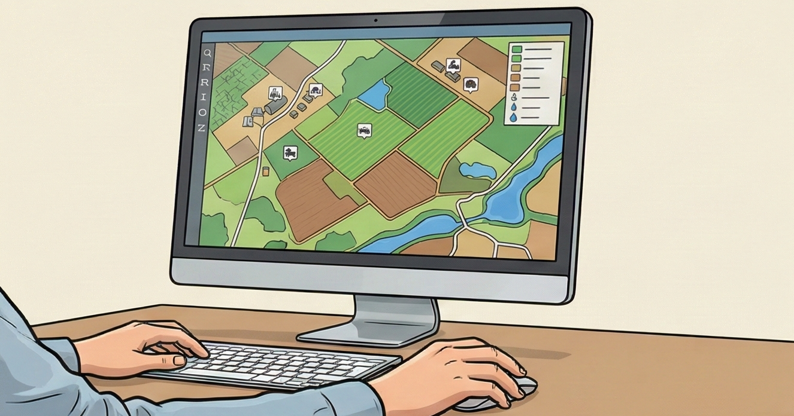

행정정보 기준 상반기와 하반기의 분석 결과를 선택하여 농지 활용 보고서를 발급받을 수 있습니다.

기준이 되는 행정정보를 선택해 주세요. 같은 행정정보를 사용한 분석 결과 보고서를 생성할 수 있습니다.
선택한 행정정보를 기준으로 상반기에 탐지된 농지 활용 분석 결과를 선택해 주세요.
선택한 행정정보를 기준으로 하반기에 탐지된 농지 활용 분석 결과를 선택해 주세요.